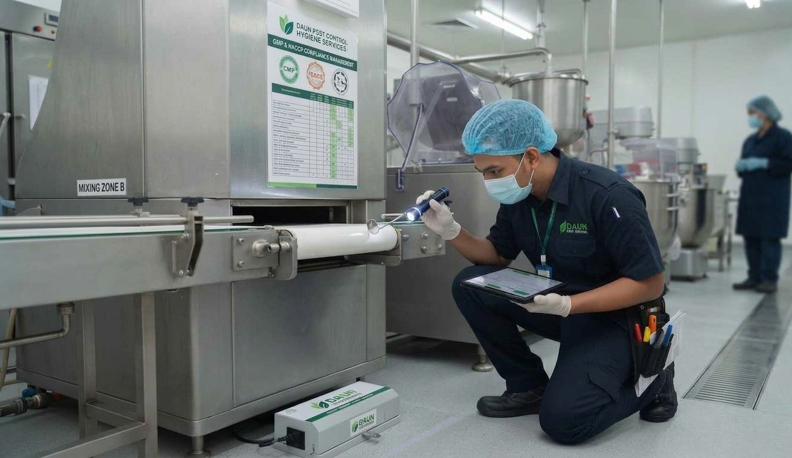
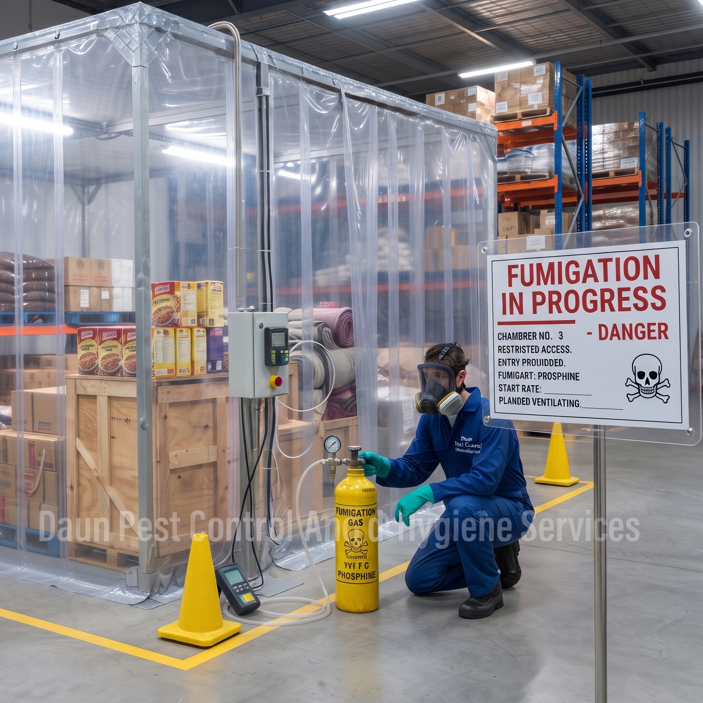
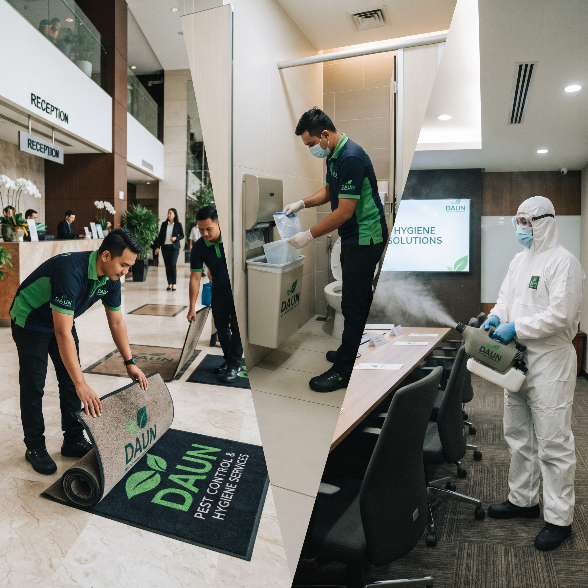

Yes, we actively assist facilities during initial setup by establishing Prerequisite Programs (PRPs), mapping monitoring stations, setting up standard operating documentation, and providing proofing assessments required before pre-audit inspections.
GMP, HACCP & Halal Compliance Services

1. Corporate Overview
Daun Pest Control And Hygiene Services is a premier provider of commercial pest management and hygiene solutions, dedicated to helping businesses maintain uncompromising standards of cleanliness, safety, and operational excellence. Recognizing the stringent regulatory landscape of modern supply chains, we specialize in partnering with food manufacturing facilities, central kitchens, pharmaceutical plants, and hospitality establishments.
Our core operational framework is designed around strict adherence to Good Manufacturing Practice (GMP), Hazard Analysis and Critical Control Points (HACCP), and Halal certification requirements, ensuring that our clients pass regulatory audits with complete confidence.
2. Core Treatment Focus
To support facilities operating under GMP, HACCP, and Halal mandates, our Integrated Pest Management (IPM) strategy focuses on risk reduction, cross-contamination prevention, and full traceability:
- Non-Toxic & Chemical-Free Interventions: Prioritizing mechanical, physical, and biological control methods (such as glue boards, pheromone traps, and insect light traps) in sensitive processing and storage areas to prevent chemical contamination of products.
- Audit-Compliant Rodent & Crawling Insect Control: Implementing multi-line defense barriers around perimeter walls, dock loading bays, and processing zones using tamper-resistant stations and detailed trend-analysis mapping.
- Halal-Compliant Hygiene & Sanitization Services: Utilizing chemical solutions and cleaning agents that are strictly free from non-Halal or swine-derived ingredients, ensuring the integrity of Halal processing lines remains uncompromised.
- Exclusion & Proofing Solutions: Sealing entry points, structural gaps, and pipe penetrations to proactively eliminate pest harborages before infestations occur.
3. Strategic Functions in Audit Frameworks
In the context of GMP, HACCP, and Halal compliance, our function is not merely to eliminate pests, but to act as a critical risk-mitigation partner that guarantees product safety, regulatory compliance, and audit readiness:
A. Function in GMP (Good Manufacturing Practice)
- Maintaining Hygienic Infrastructure: Implementing physical barriers, insect screens, and structural proofing to ensure pests do not violate the facility's sanitary boundary.
- Non-Contaminating Treatments: Using mechanical, non-toxic, or strictly regulated physical control measures near production lines so that pest control methods themselves do not become physical or chemical contaminants.
- Standardized Operational Procedures (SOPs): Operating under clear, documented routines and safety measures (including PPE compliance) aligned with strict facility operational rules.
B. Function in HACCP (Hazard Analysis and Critical Control Points)
- Controlling Biological & Physical Hazards: Preventing biological hazards (pathogens carried by rodents, flies, or cockroaches) and physical hazards (pest droppings, body parts, or chewed materials) from entering critical limit zones.
- Data-Driven Trend Analysis: Tracking bait consumption, insect trap counts, and pest sightings to identify emerging risks early and trigger corrective actions before critical thresholds are breached.
- Audit Verification & Traceability: Providing complete, traceable logbooks—including floor maps, station mapping, Chemical Safety Data Sheets (SDS), and service reports required by external auditors.
C. Function in Halal Compliance (e.g., JAKIM Standards)
- Preserving Halal Integrity (Najs Prevention): Preventing pests—especially those classified as severe impurities (Najs Al-Mughallazah) or vectors carrying impurities—from contaminating Halal processing equipment, raw materials, or packaging.
- Halal-Compliant Chemicals & Materials: Ensuring all sanitizers, cleaning agents, baits, and chemical formulations used are strictly free from non-Halal or swine-derived ingredients.
- Preventing Cross-Contamination: Using dedicated, sanitized equipment and strict protocols so pest management activities never accidentally compromise the Halal status of production lines.
Executive Summary of Tasks across Frameworks
| Framework | Core Objective | Key Operational Tasks |
|---|---|---|
| GMP | Sanitary Facility Infrastructure | Structural proofing, mechanical/non-toxic traps, perimeter defense, gap sealing. |
| HACCP | Hazard Control & Traceable Data | Station mapping, routine trend analysis, logbook upkeep, SDS documentation. |
| HALAL | Purity & Najs Prevention | Zero-tolerance vector control, Halal-compliant chemicals, cross-contamination prevention. |
4. Key Advantages of Partnering With Us
- 100% Audit-Ready Compliance Framework: Delivers comprehensive, audit-ready logbooks equipped with floor plans, pest activity trend analysis, pesticide Safety Data Sheets (SDS), service reports, and technician certifications tailored specifically to satisfy JAKIM Halal, MOH (KKM), GMP, and HACCP audits.
- Halal Integrity & Safety Assurance: Guarantees that all cleaning agents, sanitizers, and pest management procedures are 100% compliant with Halal requirements—free from non-Halal or swine-derived ingredients.
- Proactive Integrated Pest Management (IPM): Focuses on long-term prevention using mechanical barriers, exclusion techniques, non-toxic traps, and structural proofing, reducing reliance on chemical treatments in critical production and storage areas.
- Tailored Risk Assessment & Site-Specific Plans: Replaces generic treatments with customized pest control strategies based on an in-depth evaluation of your facility’s unique architecture, supply chain risks, and operational workflows.
- Highly Trained & Certified Technicians: Personnel are extensively trained in food safety protocols, hygiene compliance, cross-contamination prevention, and strict Personal Protective Equipment (PPE) standards.
- Data-Driven Monitoring & Trend Analysis: Utilizes systematic tracking of bait stations and insect traps to identify potential pest threats early, allowing for preventive corrective measures before risks impact operations.
- Brand Protection & Operational Continuity: Serves as a reliable quality assurance partner, safeguarding your business reputation, preventing costly product recalls, and ensuring uninterrupted daily operations.
5. Audit-Ready Documentation & Traceability Package
In regulated commercial audits, paper trails and data verification are just as important as physical treatments. We supply a Site Master Pest Control Logbook covering:
- GMP Records: Pesticide registry approved by the Pesticide Board, Safety Data Sheets (SDS/MSDS) for all applications, post-service inspection reports, and licensed applicator (PAL/APAL) credentials.
- HACCP Records: Master facility floor plan with numbered station mapping, individual station inspection logs, monthly/quarterly pest trend charts, and Corrective Action Reports (CAR).
- Halal Records: Official declarations of Halal-compliant chemicals, cross-contamination prevention protocols, and verified service logs formatted for internal committee and official JAKIM/JAIN audits.



Frequently Asked Questions
-
Does Daun Pest Control assist during new GMP, HACCP, or Halal certification setups?
-
How do you ensure chemicals used do not violate JAKIM Halal requirements?All sanitizers, disinfectant formulations, pest baits, and gels applied within Halal processing zones undergo strict verification to ensure they are 100% free from swine-derived components or non-Halal active ingredients. Official declarations are provided in your logbook.
-
What kind of documentation is provided during external health or auditor inspections?We supply a complete Site Master Pest Control Logbook containing site maps with numbered bait/trap stations, Safety Data Sheets (SDS), service logs, technician license copies, chemical usage registers, and periodic pest trend analysis graphs.
-
How do I request an audit compliance assessment or book a service?Booking with Daun Pest Control And Hygiene Services is simple:
- 1. Submit Enquiry: Contact us via phone (+6016 338 0960) or WhatsApp with your facility details and location.
- 2. Facility Audit & Proposal: We perform an on-site risk assessment, examine structural vulnerabilities, and provide a customized compliance proposal.
- 3. Setup & Ongoing Management: Upon approval, we deploy numbered monitoring stations, establish your site logbook, and conduct scheduled routine services.
-
How far in advance should we schedule a site compliance evaluation?We recommend scheduling a facility inspection 1 to 2 weeks prior to any major external audit (such as MOH, JAKIM, or ISO/HACCP audits) to allow sufficient time for gap sealing, trend reporting updates, and logbook verification.